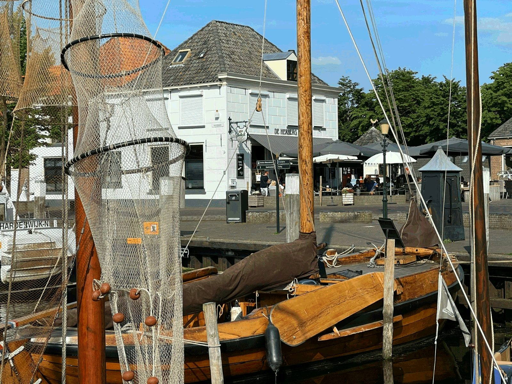

Havenstraat 7, Elburg
De Herberg
Zeemans Welvaren
Gezellig restaurant aan de haven van vestingstad Elburg. Wij koken puur en met veel lokale ingrediënten. Proef en voel de historie van de Zuiderzee!
Dinsdag t/m zaterdag open vanaf 10:00
Lunch 11:30 – 16:30
Diner 17:00 – 21:00
Aan de kade, tussen de botters
Midden in de oude vestingstad, met de haven voor de deur. Kom binnen voor een kop koffie vanaf tien uur, schuif aan voor de lunch of blijf voor het diner. Op het terras aan het water kijkt u zo op de schepen.
Op de kaart staat eerlijk eten: soep en broodjes, uitsmijters en kroketten, en 's avonds vis, mosselen, schnitzels, varkenshaas en tournedos.
De kaart
Lunch van 11:30 tot 16:30, diner vanaf 17:00. Heeft u een allergie? Meld het ons!
Lunch · 11:30 – 16:30 uur
Soepen
Maaltijdsalades
geserveerd met brood
Koude broodjes
Warme broodjes
Tosti
Uitsmijters
Frituur
Warme gerechten
geserveerd met salade, friet en mayo
Voor de kinderen
Glutenvrij brood +1,00. Heeft u een allergie? Meld het ons! Lunchkaart als pdf
Diner · vanaf 17:00 uur
Voorgerechten
Visgerechten
Salades
geserveerd met brood
Vleesgerechten
Vlees- en visgerechten serveren wij standaard met friet en mayo. Om voedselverspilling tegen te gaan serveren wij de gebakken aardappelen en salade op aanvraag.
Vegetarische gerechten
geserveerd met salade
Dagschotel
Voor de kinderen
Kinderen die hun bordje netjes leeg eten, krijgen nog een verrassing.
Heeft u een allergie? Meld het ons! Kruisbesmetting van allergenen is in onze keuken nooit 100% uit te sluiten. Dinerkaart als pdf
IJs
Dessertwijn
Wat vindt u van ons?
Op de nagerechtenkaart in het restaurant staat een QR-code. Scan hem met de camera van uw telefoon en laat een review achter.
Heeft u een allergie? Meld het ons! Nagerechtenkaart als pdf
Koffie
Onze koffie is ook cafeïnevrij verkrijgbaar.
Koffie met een likeur
Thee
Koffie en thee staan op de nagerechtenkaart (pdf).
Openingstijden
| Dinsdag t/m zaterdag | vanaf 10:00 uur |
|---|---|
| Keuken, lunch | 11:30 – 16:30 uur |
| Keuken, diner | 17:00 – 21:00 uur |
De keuken is van dinsdag tot en met zaterdag open van 11:30 tot 16:30 en van 17:00 tot 21:00 uur.
Route & contact
Restaurant de HerbergHavenstraat 7
8081 GN Elburg
0525 690 955
info@deherberg-elburg.nl
Wilt u een tafel reserveren of heeft u een vraag? Bel of mail ons gerust.